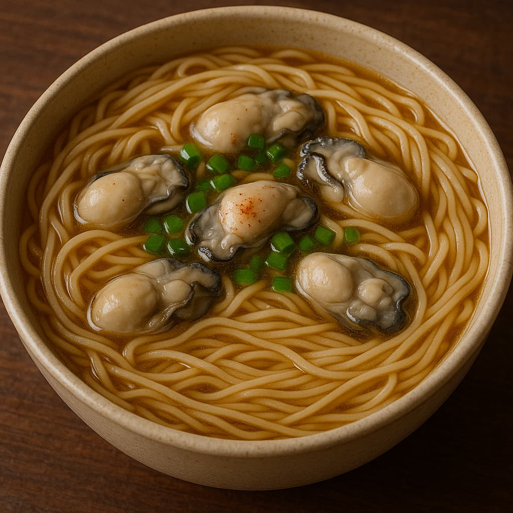

🲠Sejarah & Informasi Lengkap Slender Noodles with Oysters (Oyster Vermicelli)
📜 Sejarah & Latar Belakang
Oyster Vermicelli (蚵仔麵線 - Ô-á mī-sòaⁿ) adalah makanan jalanan legendaris asal Taiwan. Hidangan ini berasal dari daerah pesisir Taiwan seperti Tamsui dan Keelung, yang kaya hasil laut.
- Asal mula: Dibuat untuk memanfaatkan tiram segar lokal dan mi beras tipis (misua).
- Kekhasan: Kuah kental, rasa gurih laut, dan potongan tiram segar atau jeroan babi.
- Penyajian: Ditambah cuka hitam, bawang putih cincang, dan ketumbar segar.
🎎 Budaya & Kebiasaan Konsumsi
Makanan ini sangat umum dijumpai di pasar malam Taiwan dan merupakan comfort food masyarakat lokal.
- Dimakan sebagai sarapan, makan siang ringan, atau camilan sore.
- Sering dijual oleh penjaja kaki lima atau kedai tua keluarga.
- Dikenal juga dengan variasi menggunakan jeroan babi: Intestine Vermicelli.
🥢 Bahan & Informasi Gizi
Bahan Utama:
- Mi misua (vermicelli tipis)
- Tiram segar (atau jeroan babi)
- Kaldu kental (dari tepung ubi + kaldu ayam/ikan)
- Bawang putih, cuka hitam, daun ketumbar, kecap asin
Informasi Gizi (rata-rata per porsi):
- Kalori: ±350–450 kkal
- Protein: 15–25g
- Lemak: 5–10g
- Karbohidrat: 50–60g
- Sodium: Cukup tinggi (karena kaldu & bumbu)
📖 Resep & Cara Membuat:
Kami menyediakan panduan membuat Oyster Vermicelli khas Taiwan. Klik di sini untuk melihat resep lengkap!
📠Rekomendasi Tempat di Taiwan
- Ay-Chung Flour-Rice Noodle (阿宗麵線) âï¸âï¸âï¸âï¸âï¸ â€“ Ximending, Taipei
- Tamsui Old Street Vendors âï¸âï¸âï¸âï¸ â€“ New Taipei
- Keelung Miaokou Night Market âï¸âï¸âï¸ â€“ Keelung
- Shilin Night Market âï¸âï¸âï¸ â€“ Taipei
📠Rekomendasi Tempat di Indonesia
Jakarta:
- Little Taipei âï¸âï¸âï¸âï¸âï¸ â€“ PIK
- Eat Taipei âï¸âï¸âï¸âï¸ â€“ Kelapa Gading
- Din Tai Fung âï¸âï¸âï¸ â€“ Grand Indonesia (terkadang punya seasonal menu)
Bandung:
- Waroeng Taiwan 88 âï¸âï¸âï¸âï¸ â€“ Cihampelas
- Yum Cha! âï¸âï¸âï¸ â€“ Dago Atas